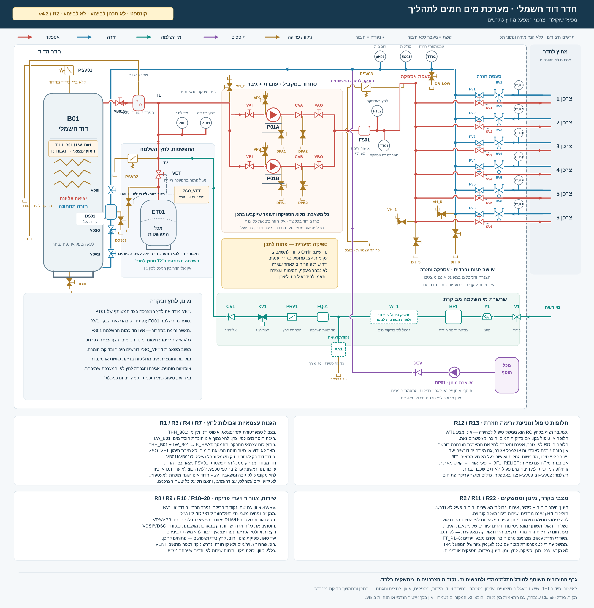
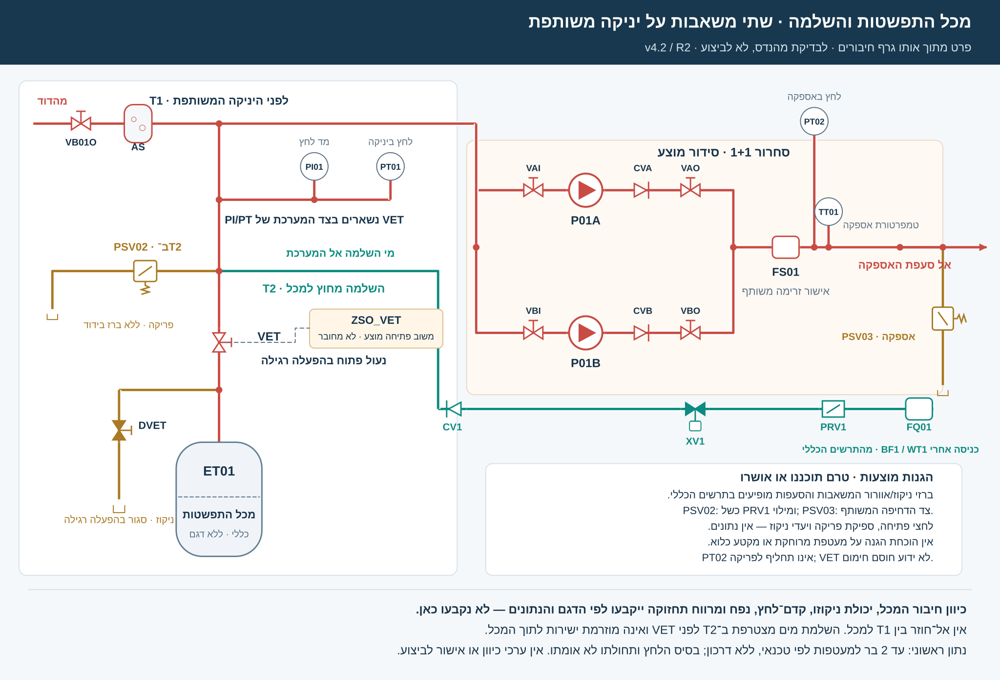

רמי רז הנדסה
Rami Raz Engineering
באתר מתוארים מודולי חימום למים הכוללים גופי חימום, משאבות, לוחות חשמל ובקרה ואביזרים נלווים. מתוארים גם תכנון, התקנה, הרצה ותחזוקה.
מקור הספק: מערכות חימום משולבות ↗על בסיס Claude · שש יציאות ושש חזרות אל צרכנים מחוץ לחדר · ריחוף לזיהוי, לחיצה לפרטים
מפעל שוקולד • תיקונים עקרוניים לבדיקה נפרדת; נתוני אתר ויצרן טרם הושלמו

מהדורת קונספט מציגה שישה זוגות חיבורים חיצוניים בלבד, ולא את ציוד המפעל עצמו. זו אינה כמות להזמנה. תכולת הרכש נשארת מערכת המים עד לממשקים; שאלות ספיקת מינימום, מעטפת לחצים והגנת מוצר נשארו לתכנון לפי נתונים.
דרישת זמינות מוצעת למערכת זו, ולא כלל מחייב לכל מערכת חימום.
P01A / P01B מחוברות במקביל. כל אחת תיבחר בהמשך עבור מלוא ספיקת התכן והעומד הנדרשים. לכל ענף ברז בידוד בכניסה וביציאה ואל־חוזר בצד הסניקה. T1 מחבר את מכל ההתפשטות בצד היניקה המשותף; FS01 נמצא אחרי איחוד הענפים.
נדרש לתכנן ולאמת מעבר אוטומטי לגיבוי: פקודה, משוב ריצה, תקלה וזמינות מכל משאבה; אישור זרימה נפרד; החלפת תורנות והפעלה תקופתית לפי הציוד. אובדן אישור זרימה חוסם חימום ומינון. כשאין נתיב או כשכל הענפים סגורים, נדרשת עצירת סחרור ללא ניסיונות רזרבה חוזרים. מעבר רזרבה יוגבל לניסיון מאושר עם נתיב, כשירות ומשוב ריצה וזרימה עצמאיים. איפוס נעילה אינו מפעיל חימום. רצף המעבר, זמני ההשהיה, Qmin וקירור לאחר עצירה ייבדקו עם ספק המכלול; לא נבחר מעקף שרירותי.
משאבת גיבוי אינה מגינה מפני כשל משותף: דוד, חשמל, לוח/בקר, FS01 משותף, סעפות או נתיב מים. אין דירוג הסתברות בין כשלים אלה. דיון בדוד נוסף תלוי בזמן ההשבתה המותר ובדרישות הזמינות. שתי משאבות מצוירות אינן הוכחת מעבר שנבדק.
מקורות לעיקרון: Grundfos — מצב עבודה וגיבוי, סעיף 13.43; Wilo — הגדרת שתי משאבות נפרדות לפעולה משותפת. אין כאן בחירה של דגם משאבה.
מהדורת קונספט מתאמת את גרף החיבורים, התרשים, תקריב המכל, ההמחשה ולוח הטכנאי. זו המחשה לבדיקה הנדסית נפרדת; מידות, הספקים, גבולות לחצים, מינימום זרימה, כימיה וערכי הפעלה טרם נקבעו.
מהמחבר T1 לפני היניקה המשותפת למשאבות, דרך T2 וברז שירות נעול פתוח, אל חיבור המים היחיד של המכל.

מי ההשלמה נכנסים למחבר T2 שמחוץ למכל. המכל מקבל ומחזיר מים באותה שלוחה. מד הלחץ והחיישן נמצאים בצד המערכת לפני ברז השירות; הם אינם מודדים את לחץ הגז או את תקינות הממברנה. בזמן שירות למכל החימום מושבת.
היישום שאושר לשלב המודל: אחסון ושינוע של שוקולד נוזלי שאינו מטומפר.
45 °C מתייחס לשוקולד עצמו. זהו יעד שנבחר למודל, ולא הוראת הפעלה. סוג השוקולד, המתכון וזמן השהייה ייבדקו עם טכנולוג המפעל. טמפרטורת מי המעטפת תיקבע בנפרד.
יצרן מכלי השוקולד AkayGAM מפרסם את הטווחים הבאים כנקודות התחלה תלויות־מתכון, ולא כמגבלות אוניברסליות. מקור: תנאי העבודה של מכלי האחסון.
| המוצר | אחסון נוזלי — טווח ייחוס בלבד |
|---|---|
| שוקולד מריר | 45–50 °C |
| שוקולד חלב ולבן | 40–45 °C |
טמפרטורת המוצר וטמפרטורת המים אינן אותו משתנה. כוונת התכנון היא למדוד את המוצר ואת מי החימום ולהגדיר ויסות מקומי והגבלת חימום לפי הצרכן. מדידת טמפרטורת הדוד לבדה אינה מוכיחה שהשוקולד נשמר ביעד. מיקום החיישנים, השסתומים ושיטת הוויסות המקומי יפורטו בהמשך.
טמפרטורות ההמסה המופיעות במדריכי טמפרור אינן הוראת אחסון ממושך. לדוגמה, Callebaut מציג עקומות שונות למתכונים שונים; אין להסיק מהן יעד אחיד של 55 °C לכל מוצר. מקור: Callebaut — עקומות עיבוד לפי מתכון.
בדיקת החיבורים התבססה על הקווים והסמלים המצוירים ועל גרף החיבורים של אותו תרשים.
מיקום חיבור ההרחבה סמוך לכניסת המשאבה: Caleffi — עקרונות מערכת מים סגורה. חיבור מילוי לקו המכל, ברז שירות, מחבר פירוק וניקוז: Amtrol — דוגמת הוראות יצרן, עמודים 2–3. סדרת Amtrol זו אינה ציוד שנבחר לפרויקט.
פונקציות מילוי, ויסות לחץ והגנת מקור המים: Caleffi — מכלולי מילוי. הסמלים מייצגים פונקציות; חלקן עשויות להיות משולבות באותו מכלול. אל־חוזר בקו ההשלמה אינו מחליף הגנה מתאימה מפני זיהום מקור המים.
בהפעלה רגילה VET פתוח ומקובע ו-DVET סגור. חיווי פתיחה ZSO_VET מוצע אך אינו מחובר במודל למפעל; הוא אינו מחליף קיבוע מכני או בדיקת מעבר מים. סגור/לא ידוע חוסם חימום. PI01/PT01 נמצאים בצד המערכת לפני ברז השירות, ואינם מודדים לחץ גז או ממברנה. תנוחת המכל ותמיכתו לפי היצרן. במילוי מוצעים ניטור זמן ונפח מצטברים, אבחון זרימה בפקודת סגור וסגירה באות לא תקף/חריגה/אובדן מתח. פקודה אינה הוכחת אטימה.
טרם נקבעו: הספק, דגם, קטרים, ספיקה, נפח המכל, קדם־לחץ, לחצי עבודה, כימיקלים ומינונים. נדרשים בהמשך גם תכנון ספיקת מינימום, ויסות הצרכנים, תכנון הניקוזים, אישור הגנת מי ההזנה ובדיקת התאמה למוצר ולחומרים.
PSV של הדוד אינו מוכיח הגנה על כל המעטפות והנפחים הניתנים לבידוד. יש לבחון לחצים מותרים, נוזל כלוא ונתיבי פריקה לכל מקטע. יעד פריקה בטוח חיצוני מסומן כממשק, ואינו מתקן ניקוז שתוכנן.
נתון ראשוני · נתון לא מאומת: עד 2 bar למעטפות לפי טכנאי, ללא דרכון. טרם ידוע: יחסי/מוחלט, עבודה/מרבי, והאם חל על כל השישה. לחץ מקומי כולל גובה ועומד משאבה; PSV דוד גבוה יותר אינו הגנת מעטפת מוכחת. אין ערכי כיוון. השוואת ויסות, מדידות ואנרגיה ←
נדרשת אנליזה עדכנית של מי הכניסה למפעל ושל מי המעגל. מידע כללי על מי השתייה אינו מחליף בדיקה בנקודת החיבור. איכות מים ונתונים להשלמה ←
מפת הרכיבים וערוצי האספקה למעגל מים חמים חשמלי — עד לחיבורי המעטפות הקיימות במפעל.
דוד, סחרור, בטיחות, התפשטות, מילוי, טיפול במים, מכשור ובקרה — בתכולה מוסכמת.
מעטפות החימום קיימות. אין כאן הזמנה של צנרת שוקולד חדשה או של מכלי שוקולד חדשים.
טרם נבחרו ספק, דגם, הספק, מידות או כמויות. זהו בסיס לדיון ולהכנת בקשה להצעה.
שני מועמדים לבירור. אף אחד מהם טרם אישר את מלוא התכולה של התרשים שלנו.
Rami Raz Engineering
באתר מתוארים מודולי חימום למים הכוללים גופי חימום, משאבות, לוחות חשמל ובקרה ואביזרים נלווים. מתוארים גם תכנון, התקנה, הרצה ותחזוקה.
מקור הספק: מערכות חימום משולבות ↗Greentech Engineering
באתר מופיעים דודי מים חמים חשמליים. בנפרד, החברה מציגה פרויקטים בשיטת הכול כלול, התקנה, הפעלה, הדרכה, תחזוקה וחלפים.
| נושא | רמי רז | גרינטק |
|---|---|---|
| צורת האספקה | תיאור מפורש של יחידת חימום מים משולבת, מותאמת לפרויקט. | קטלוג דודי מים חשמליים; הרכב החבילה למעגל שלנו דורש פירוט. |
| משאבות ולוח בקרה | נכללים בתיאור המודול. סוג, כמות ואלגוריתם יוגדרו בהצעה. | יש לברר אם כלולים בהצעת הדוד או בחבילת ההקמה. |
| חיבור למעטפות הקיימות | נדרש אישור משני המועמדים גבולות צנרת המים, ויסות הענפים, התאמה ללחצי המעטפות, ספיקת מינימום ובדיקות מסירה. | |
| איכות מים וכימיה | לא הוכחה תכולה מלאה לפרויקט שלנו. יש לכלול בדיקת מים, תוכנית טיפול, מינון ובקרה, עם אחריות משולבת מול יצרן הדוד. | |
| תחזוקה באתר המפעל | תחזוקה נכללת בתיאור השירות; זמני תגובה, חלפים וכיסוי האתר לא אושרו. | תחזוקה וחלפים מופיעים במדיניות השירות; זמני תגובה וכיסוי האתר לא אושרו. |
| ניסיון ביישום דומה | נדרש פרויקט ייחוס של חימום מים למעטפות בתעשיית המזון. ניסיון בקיטור או בחימום חשמלי ישיר לבדו אינו מוכיח התאמה למעגל הזה. | |
זהו ניתוח של ההתאמה הפומבית לצורת החבילה המבוקשת. ההכרעה תהיה לפי הצעה עם תכולה מלאה, אחריות ותוכנית שירות. אין כאן אישור טכני או בחירה מסחרית.
המספור מסייע לדיון. הוא אינו כתב כמויות; חלק מהפונקציות עשויות להגיע בתוך אותו מכלול.
דוד עם גופי חימום טבולים, חיבורי מים, מכלולי כוח ובקרת חימום, והגנות עצמאיות לטמפרטורת־יתר ולחוסר מים לפי היצרן. מפרט המודול יבהיר מה כבר מובנה בו.
אחריות מבוקשת: האינטגרטור הראשי. רמי רז / גרינטק; קרשין־שלו כערוץ חלופי לבדיקת הדוד.
בתיקון R1 מופיעים VB01I/VB01O לבידוד הדוד ו-DB01 לניקוז. THH_B01, LW_B01 ו-K_HEAT מייצגים פונקציות הגנה/כוח עצמאיות מוצעות; חיווי וסכמת המימוש לפי יצרן הדוד. הגנת בטיחות דורשת איפוס מקומי לאחר בירור, ללא עקיפה מה-HMI. דגם, הספק וחומרים טרם נבחרו.
שתי משאבות סחרור במקביל P01A / P01B, עובדת וגיבוי; ארבעה ברזי בידוד ושני אל־חוזרים. נדרשת בקרה למעבר לגיבוי ולתורנות עם משוב נפרד מכל משאבה. מפריד אוויר ושחרור אוטומטי, מפריד משקעים ואישור זרימה משותף FS01. כל משאבה תיבחר למלוא דרישת התכן; נדרשת גישה לשירות.
ערוצים אפשריים: מכלול המשאבות והבקרה כחלק מחבילת האינטגרטור; בלאס / Spirotech למפרידים; רדט או מודוטק למכשור הזרימה.
FS01 הוא אישור משותף ואינו מוכיח זרימה בכל ענף; FQ01 מודד השלמה. נוספו VDSI/VDSO ו-DDS01 לבידוד/פריקת DS01; DPA1/DPA2/DPB1/DPB2 לניקוז משני צדי אל־חוזרי המשאבות, ואוורור VPA/VPB לפי הדגם. פתרון ספיקת מינימום, תורנות ורצף קירור עדיין טעונים נתונים ובדיקה.
מכל ממברנה עם תמיכה עצמאית; שלוחה מ־T1 לפני היניקה המשותפת למשאבות; T2 חיצוני למכל; ברז שירות VET נעול פתוח, מחבר פירוק, ברז ניקוז שירות DVET וקו ניקוז. מד לחץ PI01 וחיישן PT01 בצד המערכת לפני ברז השירות.
ערוצים אפשריים: א.ש.ל למכל ואביזרי חימום; בלאס לאביזרים; רדט / מודוטק למכשור. האינטגרטור אחראי לחישוב ולהתאמה.
אין אל־חוזר בשלוחת המכל. בהפעלה רגילה VET פתוח ומקובע ו-DVET סגור. ZSO_VET הוא חיווי פתיחה מוצע; סגור/לא ידוע חוסם חימום. PI01/PT01 אינם מודדים קדם־לחץ או ממברנה. שירות למכל אוסר חימום; תנוחת ההתקנה והתמיכה לפי היצרן.
הצגת החיבור המוגדל בתרשים ←שסתום בטיחות מותאם לדוד וקו פריקה עד ליעד בטוח שייקבע בתכנון. יש לבדוק אם השסתום כלול בדוד ולהימנע מכפל הזמנה.
ערוץ אפשרי: יצרן הדוד דרך האינטגרטור; בלאס / LESER כאפשרות לאביזר, בכפוף לאישור.
אין ברז ניתוק בין הדוד ל-PSV. שסתום הדוד לבדו אינו מוכיח הגנה לכל מעטפת או מקטע מבודד. מעטפת הלחצים, התפשטות נוזל כלוא, לחץ הפתיחה, יכולת הפריקה ויעד בטוח חיצוני ייבדקו בתכנון.
צנרת מים, מחברים, סעפות, תמיכות, בידוד ואביזרי שירות עד לנקודות המעטפת המוסכמות. ששת זוגות היציאה והחזרה לצרכנים שמחוץ לתרשים נכללים במיפוי הממשקים.
אחריות מבוקשת: האינטגרטור הראשי וקבלן ההתקנה שלו; ספקי אביזרים כגון בלאס וא.ש.ל.
היציאה והחזרה החיצוניות אינן מעקף אספקה–חזרה. BV1…BV6 מייצגים איזון עם נקודות בדיקה; TT_R1…TT_R6 מוצעים למדידת חזרה. אורכים, קטרים, תנאי סגירת ענפים וויסות מקומי טרם נקבעו.
ברז ניתוק, מסנן כניסה והגנה מתאימה מפני זרימה חוזרת, כולל ברזי שירות ונקודות בדיקה כנדרש לסוג המכלול.
ערוץ אפשרי: בלאס / Socla, בכפוף לתכנון ולאישור סוג ההגנה.
BF1 מייצג פונקציית הגנה, לא סוג שנבחר. מז״ח או הפרדה פיזית, בדיקות ונתיבי ניקוז ייקבעו לפי סיווג הסיכון, הדרישות החלות בישראל והציוד הנבחר. אל־חוזר רגיל אינו תחליף להגנת מקור המים.
בחירת ריכוך, אוסמוזה הפוכה או דמינרליזציה תתבסס על בדיקת מי האתר ועל דרישות הדוד והחומרים. אין החלטה שכל השלבים נחוצים או שחייבים להתקין אותם יחד.
אנלייזר קשיות עם הכנת דגימה, מגיבים וניקוז הוא אפשרות לפי תוכנית הניטור. RO עשוי לחייב אגירה ומשאבת החזרת לחץ; תצורה ולחץ זמין לפני PRV1 ייבדקו לפי היחידה והאתר. אין הנחה שהוא ציוד קווי בלחץ מספק.
ערוצים אפשריים: אב־טק / טרייטל להכנת מים; TREION לדמינרליזציה; מודוטק לאנלייזר קשיות.
דגימה עם מגיבים יוצאת לניקוז ואינה חוזרת למערכת. גם אחרי RO נדרשת התאמה של הטיפול הכימי והחומרים.
מד נפח השלמה, וסת לחץ מילוי, שסתום מבוקר סגור ללא מתח ואל־חוזר בקו ההשלמה. הקו מתחבר ל־T2 שמחוץ למכל ההתפשטות.
ערוצים אפשריים: בלאס / א.ש.ל לאביזרים; רדט / מודוטק למדידה; האינטגרטור לאלגוריתם ולמסירת המכלול.
נדרשות מגבלות זמן ונפח גם במילויים חוזרים, התרעת זרימה בפקודת סגור ונוהל מילוי ראשוני. פקודת סגירה לבדה אינה מוכיחה אטימה מכנית.
תוכנית טיפול למעגל סגור, מכל תוסף, קו יניקה, משאבת מינון, אל־חוזר ומכלול הזרקה לקו החזרה. יש לדרוש בהצעה גם ניטור חוסר חומר ואביזרי הגנה לפי יצרן הדוזר.
ערוצים אפשריים: אב־טק לתוכנית מים וכימיה; מודוטק למערכת הזרקה משולבת; דיוניקס כערוץ נוסף לציוד מינון.
DOSE_T הוא מחבר ההזרקה, ואינו מכל התוסף. מינון מחייב תוכנית וגבולות מאושרים, משוב ריצת סחרור ו-FS01 תקף; חוסר זרימה חוסם מינון. טרם נבחרו חומר או מינון. נדרשים התאמה לחומרים ולסיכון זיהום מוצר, בדיקה ייעודית לריכוז ותוכנית שירות.
TT01 נמצא אחרי המשאבות ו-FS01; TT02 בחזרה. TT_R1…TT_R6 הם חיישני חזרה מוצעים לפי ענף. חיישני pH ומוליכות עם משדרים וחיבורי שירות. שיטת ההתקנה, תנאי הדגימה והתאמה למים במוליכות נמוכה ייבדקו עם ספק המכשור.
ערוצים אפשריים: רדט / Endress+Hauser, מודוטק; דיוניקס / Knick כחלופה לאנליטיקה.
pH ומוליכות אינם מדידה של ריכוז מעכב קורוזיה. נדרשים כיול ובדיקות ייעודיות לפי תוכנית הטיפול.
אינטגרציה של לחץ, זרימה, טמפרטורה, נפח השלמה ואיכות מים; התראות ונעילת מילוי בעת חריגה; הפסקת חימום בחוסר זרימה או לחץ; מינון מוגבל רק עם תוכנית מאושרת, משוב ריצה, זרימה ואיכות אות תקפים; רישום וכיול.
אחריות מבוקשת: אינטגרטור יחיד לשיטת הבקרה, ללוח ולבדיקות. רדט / Unitronics הוא ערוץ אפשרי לבקרים ולממשק מפעיל.
סוג הבקר והממשק טרם נבחר. בקר תהליך רגיל אינו מחליף את הגנות הדוד העצמאיות; מימוש ההגנות ואימותן יפורטו בהמשך.
הצנרת והמכלים של השוקולד קיימים. בודקים חיבורי מים, חומרי מבנה, לחץ מותר, מצב מעטפות ומדידות מוצר קיימות. חיישן מוצר חדש יתווסף רק אם נדרש אחרי הבדיקה.
יעד המודל: 45 °C לשוקולד נוזלי שאינו מטומפר. טמפרטורת מי החימום ושיטת הוויסות ייקבעו בנפרד.
ב-קונספט מוצגים שישה זוגות חיבורים חיצוניים; הצרכנים עצמם אינם מצוירים, ואין בכך כמות להזמנה. TT-P הוא ממשק מוצר עתידי בלבד; אין מדידת מוצר מחוברת. ויסות הענפים, לחץ מותר והגנת המוצר טעונים תכנון.
נתון ראשוני · נתון לא מאומת: עד 2 bar למעטפות לפי טכנאי, ללא דרכון. טרם ידוע: יחסי/מוחלט, עבודה/מרבי, והאם חל על כל השישה. לחץ מקומי כולל גובה ועומד משאבה; PSV דוד גבוה יותר אינו הגנת מעטפת מוכחת. אין ערכי כיוון. השוואת ויסות, מדידות ואנרגיה ←
אוסמוזה הפוכה אינה החלטת ברירת מחדל. קודם מגדירים איכות מים מותרת לכל הציוד. טיפול כימי, הכנת מי המילוי וצמצום חדירת אוויר/מי השלמה הם נושאים משלימים. רמת האוטומציה אינה מבטלת כיול ובדיקות מעבדה. למחקר המים והבקרה ←
הכוונה היא לדרוש אחריות כוללת מהאינטגרטור הראשי. הרשימה הבאה מציגה יכולות אפשריות; לא הוכח קשר מסחרי בין הספקים לבין המועמדים הראשיים.
טיפול במעגלים סגורים, בדיקות מים תקופתיות, מניעת קורוזיה ומשקעים, ציוד מינון והקמה ותחזוקה של ריכוך ו־RO.
לברר: תוכנית מותאמת לחומרים שלנו, תחומי בדיקות, אחריות וכיסוי שירות למפעל.
שירותי החברה ↗ · ציוד לטיפול במים ↗נציגת Endress+Hauser בישראל לפי אתר היצרן: בחירת מכשור, אוטומציה, שירות וכיול. בקטלוג רדט מופיעים גם בקרי Unitronics.
לברר: דגמי החיישנים, בניית הלוח, התוכנה, בדיקות הקבלה ואחריות האינטגרציה.
אישור היצרן והשירות בישראל ↗ · בקרים ↗מערכות הזרקת כימיקלים, מכשור pH, מוליכות וקשיות, מדידות תהליך והכנת דגימה. החברה בעכו מציגה שירות שטח ומעבדה/סדנה.
לברר: הרכב מערכת המינון, זמינות מגיבים וחלפים, כיול וזמן תגובה באתר המפעל.
תחומים ומכלולים ↗ · שירות טכני ↗ברשימת הספקים: Spirotech להפרדת אוויר ומשקעים, LESER לשסתומי בטיחות, Socla למניעת זרימה חוזרת ויצרני אביזרי ויסות ומדידה.
לברר: התאמת הסדרה, אישורי המכלולים, זמינות וסידור בדיקות ותחזוקה.
רשימת היצרנים והתחומים ↗קטלוג של מכלי התפשטות, משאבות סחרור, אביזרי מילוי, וסתים, מסננים ומדי לחץ. מוצגים סניפים בחולון ובחיפה.
לברר: התאמה תעשייתית, דגם ואישורים, והאם ניתן שירות בשטח. נוכחות בחיפה אינה התחייבות לזמן תגובה.
קטלוג ופרטי החברה ↗ערוץ מקומי המציג דודי מים חשמליים. הוא מתאים לבדיקת אפשרות אספקה של מקור החום.
לברר: שירות לדוד המסוים ומי משלים ואחראי לכל המעגל. לא הוכחה כאן חבילת אינטגרציה מלאה.
קטלוג הספק בישראל ↗ · קטלוג היצרן ↗דיוניקס / Grundfos / Knick: ציוד מינון ואנליטיקה. Knick מאשרת את דיוניקס כשותף מקומי. שירות שטח והרכב תחנת מינון מלאה טעונים בירור. מינון ↗ · שותפים מקומיים ↗
טרייטל / TREION: ריכוך, RO, ציוד בדיקה ועמודות דמינרליזציה. תוכנית כימית מלאה למעגל החם לא אושרה. הכנת מים ↗ · דמינרליזציה ↗
המטרה: כתובת אחת לתכנון, להקמה, למסירה ולשירות, גם כשהציוד מגיע מכמה יצרנים.
פתיחת פרטי ציוד מציגה בקשות ומשובים בנפרד. בחירת תפקיד כאן היא כלי להצגת הרשאות, ואינה הזדהות למפעל.
שחזור אותות אינו מוחק תקלות ואינו מפעיל ציוד. תמונת העבודה זמינה רק כשאין נעילות פתוחות; היא טוענת חבילת משובים מקומית מפורשת.
אלה הזרקות משוב לצורך בדיקת הרצף המקומי, ולא אישור שנשלח מבקר. אין זמן התנעה מספרי במודל.
איכות האות מוצגת בנפרד מהתוכנית הכימית. pH ומוליכות אינם מודדים ריכוז מעכב קורוזיה.
מגבלות זמן, נפח, לחץ ומחזורים חוזרים טרם נקבעו. פקודת סגירה אינה מוכיחה אטימה. הספירה במערכת המיועדת נשמרת בין מחזורים; כאן אין היסטוריית מדידה.
מינון מחייב תוכנית מאושרת, גבולות, משוב ריצה ו־FS01 תקף, וכן אותות איכות תקפים לפי התוכנית. אין מינון בלתי מוגבל ואין המרת pH/EC אוטומטית לריכוז תוסף.
סיבה פעילה, אישור ראייה ונעילה הם מצבים נפרדים. היומן מקומי בלבד ונמחק בטעינת הדף. עדיפויות התצוגה ראשוניות, ללא קביעה של זמני תגובה.
| עדיפות / מקור | תקלה והשפעה | סיבה | אישור ראייה | פרטים |
|---|
| אירוע | פעולה | מקור |
|---|
הסתרת תקלה, השבתת חיישן ומסלולי עקיפת הגנה אינם מיושמים. רשימת תקלות מוסתרות / ציוד מחוץ לעבודה תחייב ניהול הרשאות, משך ותיעוד בתכנון.
בדיקות ידניות נשארות חלק מההפעלה. תנוחות התקנה, מרווחי טיפול ופרטי ציוד נקבעים לפי היצרן והתכנון.
ZSO_VET אינו מוכיח מעבר מים, קדם־לחץ או תקינות ממברנה. משוב פתיחה אינו מחליף קיבוע מכני ונוהל שירות. תקריב קונספט ←
דיווח זה הוא קלט בדיקה בלבד; העמדה אינה מאפסת הגנות עצמאיות. הסרת הסיבה, איפוס מקומי, אישור ראייה, איפוס הנעילה ובקשת הפעלה חדשה הם שלבים נפרדים. ניסיון רזרבה לא חוזר ללא גבול.
נתונים חסרים, תגובות עקרוניות וגבולות הקונספט ← · טיפול במים ובקרה ←
תצוגת תהליך שטוחה ורקע ניטרלי, עם צבע לחריגות: Emerson — High Performance HMI. הפרדה בין מצב הסיבה, אישור ראייה ואיפוס: OPC Foundation — מונחי תקלות ותנאים. לא נטענת עמידה בתקן ISA מלא.
תצוגת התהליך מפושטת; פרטי ארמטורה ואבטחה נמצאים בתרשים ההנדסי. מקור הקלטים, גבולות, זמני תגובה, תוכנית מינון, ספיקת מינימום, חיווי מגענים/הגנות ודרישות גישה טרם תוכננו ואומתו. אין בקר מחובר ואין שליחת פקודות. אובדן קישור אינו מוכיח שהמערכת הפיזית נעצרה.
מידע מוצר: 45 °C הוא ייחוס ראשוני לשוקולד נוזלי שאינו מטומפר. הוא אינו ערך נמדד ואינו ערך כיוון למי החימום. גבולות הנדסיים ומידע להשלמה ←